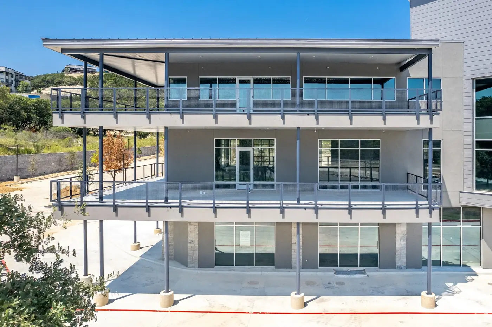

GLASS SERVICES IN LEON VALLEY, TX
Commercial and residential glass in Leon Valley, with the details in view.
Leon Valley properties benefit from Master Glass Solutions' full-service glass capabilities. We provide residential glass installation, commercial storefront systems, custom glass features, and responsive emergency glass repair throughout the Leon Valley community. Start with the property, the glass need, and the desired result—then choose the service path that fits.
LOCAL GLASS EXPERTISE
Glass work for Leon Valley properties.
Leon Valley properties benefit from Master Glass Solutions' full-service glass capabilities. We provide residential glass installation, commercial storefront systems, custom glass features, and responsive emergency glass repair throughout the Leon Valley community.
Leon Valley projects often involve practical residential repairs, storefront visibility near busy retail corridors, and access timing around active properties. If the job is near an occupied business or multi-tenant building, include preferred access windows and any security concerns.
Customers searching locally need a straight answer: what service is available, what information to provide, and how to reach a real next step. This page links directly to the residential, commercial, emergency, storefront, and custom-glass information needed to make that decision.
Residential glass
Shower glass, mirrors, window panes, and custom home details.
Commercial glass
Storefront, partition, custom, and property-focused glass work.
Emergency glass repair
24/7 support for urgent broken-glass situations.
Custom glass
Made-for-the-space solutions when standard is not the answer.
WHAT TO EXPECT
Start with a useful scope.
Share the property address, service type, timing, photos, and approximate measurements. That helps turn a local search into a more productive project conversation.
FOR URGENT DAMAGE
Call, don’t wait on a form.
If the glass issue affects safety, security, weather protection, or operations, call the 24/7 emergency support line directly.
Call 210-370-3700Does Master Glass Solutions provide glass services in Leon Valley, TX?+
Leon Valley properties benefit from Master Glass Solutions' full-service glass capabilities. We provide residential glass installation, commercial storefront systems, custom glass features, and responsive emergency glass repair throughout the Leon Valley community. Master Glass Solutions provides residential and commercial glass service paths including storefront, custom, shower enclosure, mirror, window glass replacement, and emergency support.
How do I request a glass quote in Leon Valley?+
Call 210-370-3700 or use the quote request form. Include the Leon Valley property address, glass service needed, timing, photos, and approximate dimensions if available.
Is emergency glass support available in Leon Valley?+
Master Glass Solutions states 24/7 emergency glass support. Call 210-370-3700 to explain the damaged opening, location, and immediate safety or security needs.
MASTER GLASS SOLUTIONS
Need glass work in Leon Valley?
Tell us about the property and the project, or call 210-370-3700 for urgent glass support.